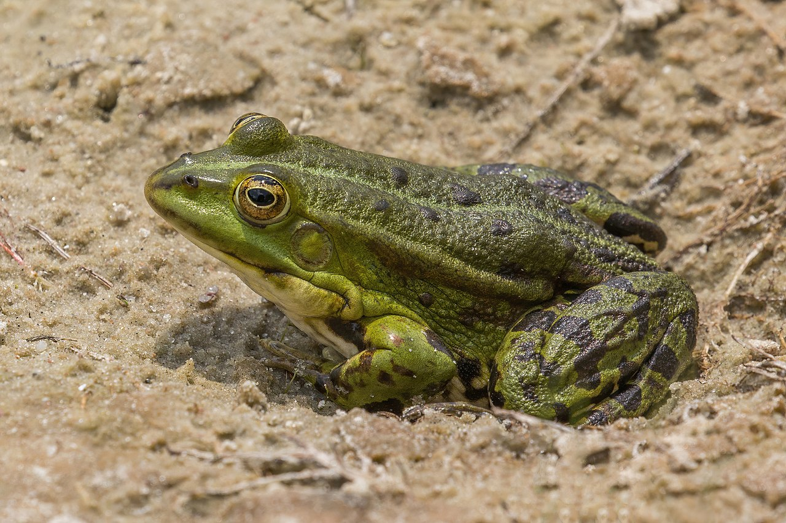
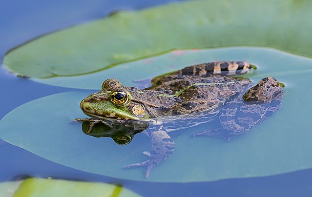
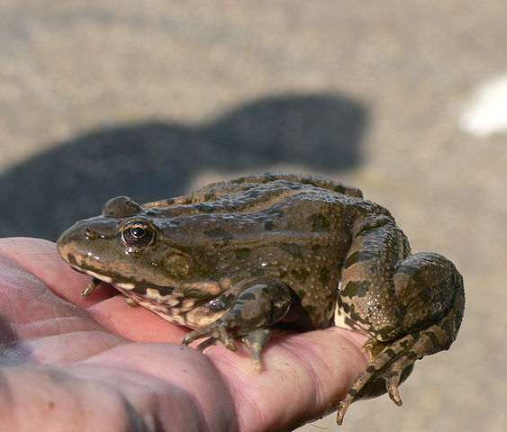
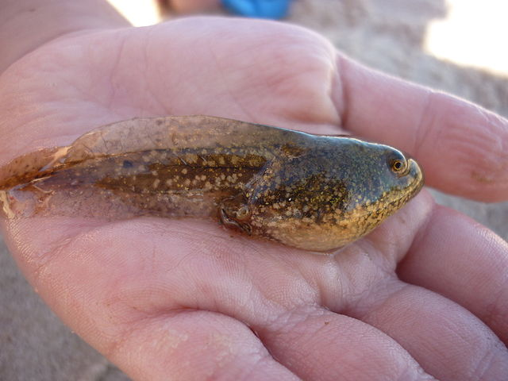
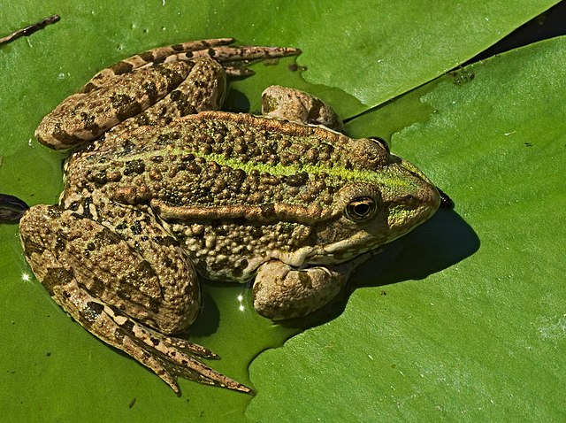

We also climb onto water buffaloes so we can eat the flies attracted to them

Some more information

Pelophylax ridibundus sounds way better

Our tadpoles can reach up to 190 mm in length

We occur in a large part of Europe

We use the magnetic field of the Earth to locate breeding ponds
The fly said to the frog, "time flies when you're having fun." The frog replied, "Actually, time's fun
when you're having flies!"
—One great frog comedian
Travel to Marshland!
Click the perfectly functional button now to get extra Marshmello